私たちのSLE
笑って生きていくために一緒に考えよう
薬について
期待とともに

SLEの薬について
治療で、症状をコントロールして
できるだけこれまでと変わらない生活を
送れることが目標となります。
SLEのメインとなる薬
従来からある治療法
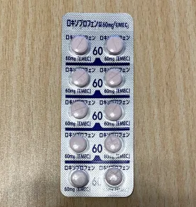
非ステロイド性抗炎症薬
代表となる薬
ロキソプロフェン
炎症を抑える働きがあり、発熱や関節痛などの改善を目的にしています
5.7円／60mg錠
免疫抑制剤
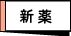

免疫抑制剤
Mycophenolate mofetil
セルセプト
SLEにおける腎炎やその他の合併症の治療に使用されます。
134.60円／250カプセル

免疫抑制剤
Tacrolimus
プログラフ
SLEには主に皮膚、関節、筋肉、内臓における炎症を抑える効果。
245.50円／カプセル(0.5mg)
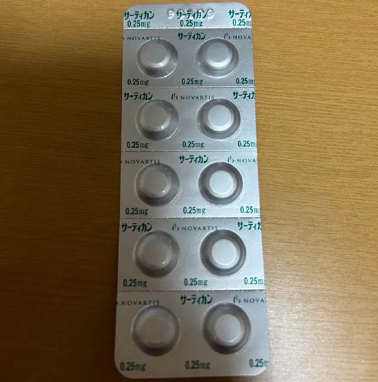
免疫抑制剤
（エベロリムス錠）
サーティカン
免疫を担当するリンパ球の増殖をおさえ、免疫の働きを抑制します。
1,063.80円／0.75mg1錠
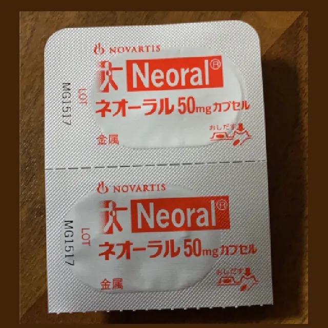
免疫抑制剤
ネオーラル
「免疫抑制薬」です。腎障害の進行抑制、皮膚症状の改善
192.90円／カプセル50mg

免疫抑制剤
グラセプター
「免疫抑制薬」です。腎移植、肝移植、心移植、肺移植、膵移植における拒絶反応の抑制
722.60円／カプセル1mg
免疫調整剤

免疫調整剤
Hydroxychloroquine
プラケニル
関節痛、発疹、疲労感、光線過敏症などを緩和する効果が期待されます。抗マラリア薬でもあります。
402.40円／200mg錠
生物学的製剤
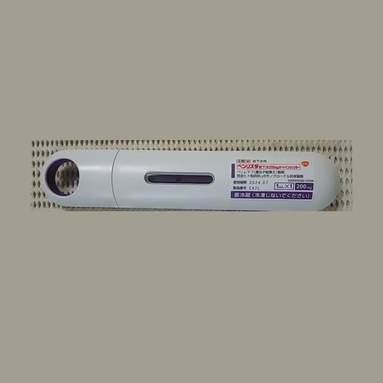
生物学的製剤
Belimumab
ベンリスタ
SLEの治療に使用される抗体医薬品で、Bリンパ球刺激因子（BLyS）を標的とします。注射薬。
16,616円/120mg
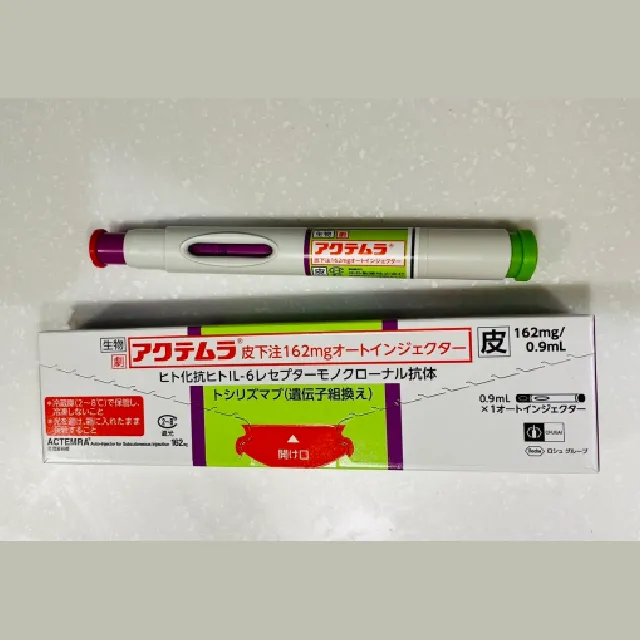
生物学的製剤
アクテムラ
注射薬。炎症を抑制する、細胞障害を抑制、病気の進行を遅らせる
32,608円／162mg
SLEの対処療法の補助的な薬
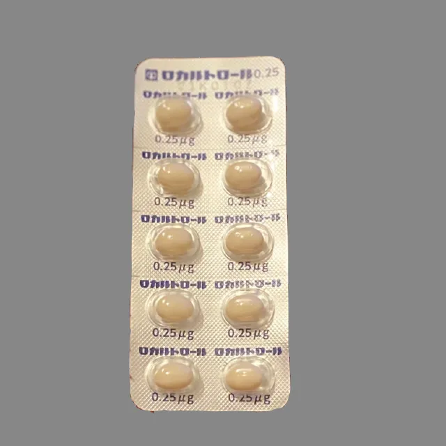
内服薬
ロカルトロール
ビタミンD3の生体内活性代謝体
11.70円／カプセル
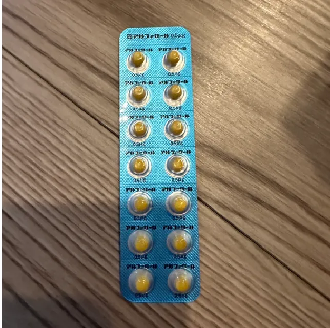
内服薬
アルファロール
骨粗しょう症の治療に広く使用される活性型ビタミンD3製剤であり、骨折のリスクを減らす効果
9.40円／カプセル0.5μg
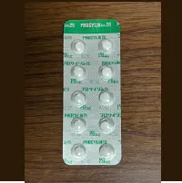
内服薬
プロサイリン
末端の血流が悪くなりレイノー現象が起こるのを予防する血流を改善する薬
28.90円／20μg錠

内服薬
ボナロン経口ゼリー
効果 骨粗鬆症
742.40円／包

内服薬
レボレード
骨粗鬆症治療薬
2,211.40円／12.5mg錠
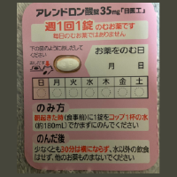
内服薬
アレンドロン酸錠
骨粗しょう症治療薬
31.00円（5mg1錠)
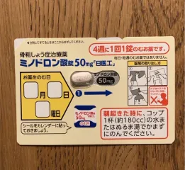
内服薬
ミノドロン
骨粗鬆症治療薬
23.40円／50mg1錠
NIG
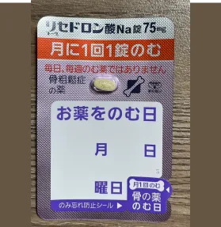
内服薬
リセドロン酸Na錠
骨粗鬆症治療薬
476.9円／75mg1錠
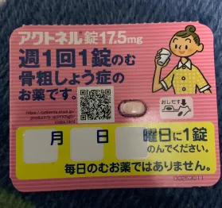
内服薬
アクトネル錠
骨粗鬆症治療薬
351.80円／17.5mg1錠